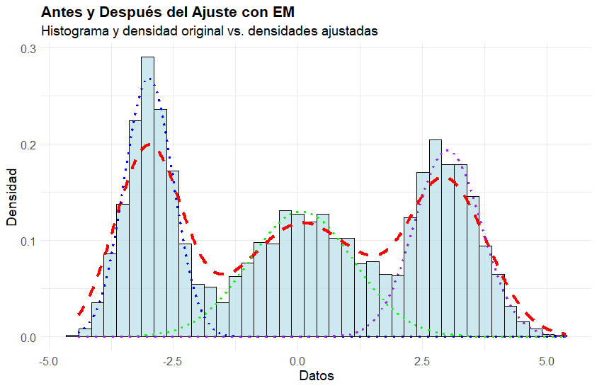

set.seed(0)muestra <-c(1, 2, NA) # Donde NA representa el valor desconocido de xmu <-0# mu_0 inicial# Función para actualizar mu y x iterativamenteIteracion =function(muestra, max_iter =20) {for (iter in1:max_iter) { #funcion iter muy util :O# Actualizar el valor de x basado en el valor actual de mu muestra[3] = mu # Como el valor más probable es mu, asignamos x = mu# Calcular la nueva media mu basado en la muestra mu_nueva =mean(muestra)# Cat sirve para mostrar en ese ordencat("Iteración:", iter, "x:", muestra[3],"mu:", mu_nueva, "\n")# Actualizar el valor de mu para la siguiente iteración mu <- mu_nueva }return(list(mu = mu, x = muestra[3]))}resultado =Iteracion(muestra)# Mostrar el resultado final de mu y xcat("Resultado final: x =", resultado$x, "mu =", resultado$mu, "\n")
Se calcula la esperanza condicional de la función objetivo, que generalmente es una función de log-verosimilitud. La idea es encontrar una estimación de los parámetros del modelo dado lo que se conoce (los datos observados) y dado un conjunto de valores actuales para los parámetros.
La idea principal es utilizar la esperanza condicional para “completar” los datos faltantes de manera probabilística, lo que permite estimar los parámetros del modelo de manera más efectiva.
Paso 3: Maximization step (M step)
Se maximiza la esperanza condicional con respecto al parámetro objetivo. Se actualizan las estimaciones y se repiten iterativamente los pasos E y M hasta que el algoritmo converge según algún criterio.
teniendo \(\mu_{1}\) pasamos al paso M que busca maximizar la función anterior
\(arg\)\(max\)\(E(log(\mathcal{L}(x,1,2|\mu))\)
Ejemplo 🐹
set.seed(0) # Generar datos con valores faltantes o latentesdatos =rnorm(200, mean =5, sd =1) datos[160:200] <-NA#Aqui le asigno los NA# Variables para datos observados y faltantesdatos_observados <- datos[!is.na(datos)] # Datos observados (sin NA), el "!" es la negación lógicadatos_faltantes <- datos[is.na(datos)] # Datos faltantes (NA)# Inicialización de valoresnum_observados <-length(datos_observados) # Número de observaciones disponibles (basicamente es un subconjunto)media_inicial <-mean(datos_observados) # Media de los datos observadosvarianza_inicial <-var(datos_observados) * (num_observados -1) / num_observados # Varianza ajustada# Función EM para datos normalesem_norm <-function(datos, media_inicial, varianza_inicial) { datos_observados <- datos[!is.na(datos)] # Valores observados num_total <-length(datos) # Longitud total de datos num_observados <-length(datos_observados) # Número de observaciones disponibles# Función para calcular la log-verosimilitud log_verosimilitud <-function(y, mu, sigma2) {-0.5*length(y) *log(2* pi * sigma2) -0.5*sum((y - mu)^2) / sigma2 }# Calcular log-verosimilitud con los valores iniciales log_verosimilitud_anterior <-log_verosimilitud(datos_observados, media_inicial, varianza_inicial)#Esta es la iteración del Algoritmorepeat {# E-Step: Esperanza condicional suma_esperada <-sum(datos_observados) + (num_total - num_observados) * media_inicial suma_cuadrados_esperada <-sum(datos_observados^2) + (num_total - num_observados) * (media_inicial^2+ varianza_inicial)# M-Step: Actualización de parámetros media_actualizada <- suma_esperada / num_total varianza_actualizada <- suma_cuadrados_esperada / num_total - media_actualizada^2# Actualizar parámetros media_inicial <- media_actualizada varianza_inicial <- varianza_actualizada# Calcular log-verosimilitud con las nuevas estimaciones log_verosimilitud_actual <-log_verosimilitud(datos_observados, media_inicial, varianza_inicial)# Imprimir valores actuales de los parámetros y log-verosimilitudcat("Media estimada:", media_inicial, "Varianza estimada:", varianza_inicial, "Log-verosimilitud:", log_verosimilitud_actual, "\n")# Verificar convergenciaif (abs(log_verosimilitud_anterior - log_verosimilitud_actual) <0.0001) break# Actualizar log-verosimilitud anterior log_verosimilitud_anterior <- log_verosimilitud_actual }# Devolver los valores estimados de los parámetrosreturn(c(media_estimada = media_inicial, varianza_estimada = varianza_inicial))}# Ejecutar la función EM con los valores inicialesresultado <-em_norm(datos, media_inicial, varianza_inicial)print(resultado)
Media estimada: 4.96539 Varianza estimada: 0.824681 Log-verosimilitud: -210.2869
Mixturas Gaussiana (Encontrar a que distribucion pertenecen los datos)
¿Se podría trabajar como una Mezclas de Variables Aleatorias?
¿Guarda relación con los métodos de composición? Spoiler… si!
Modelos ocultos de Márkov (Determinar los parámetros desconocidos)
En problemas de optimización de análisis numérico
Tiempos de ejecución
Convergencia
Referencias
Mixtura Gaussiana y library(mclust)
library(mclust) # Para ajuste de mezclas gaussianaslibrary(ggplot2) library(dplyr) set.seed(123)n =3000mu1 =-3mu2 =0mu3 =3sigma1 =0.5sigma2 =1.0sigma3 =0.7# Generar datos a partir de tres distribuciones gaussianasx1 =rnorm(n/3, mean = mu1, sd = sigma1)x2 =rnorm(n/3, mean = mu2, sd = sigma2)x3 =rnorm(n/3, mean = mu3, sd = sigma3)data <-c(x1, x2, x3)df <-data.frame(data = data)#Ajustar una mezcla de gaussianas usando el algoritmo EMmodelo_em =Mclust(data, G =3) # Especificar que queremos ajustar una mezcla de 3 gaussianas(G=K en la literatura)#Obtener las densidades ajustadas de cada componentedensidades =data.frame(x =seq(min(data), max(data), length.out =1000))

Referencias
Rizzo, M. L. (2019). Statistical computing with R, second edition (2a ed.). Chapman & Hall/CRC. https://doi.org/10.1201/9780429192760
Dempster, A. P., Laird, N. M., & Rubin, D. B. (1977). Maximum likelihood from incomplete data via the EM algorithm. Journal of the Royal Statistical Society, 39(1), 1–38. http://www.jstor.org/stable/2984875